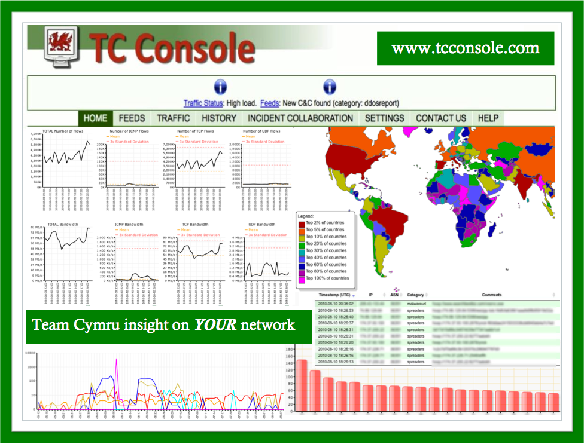
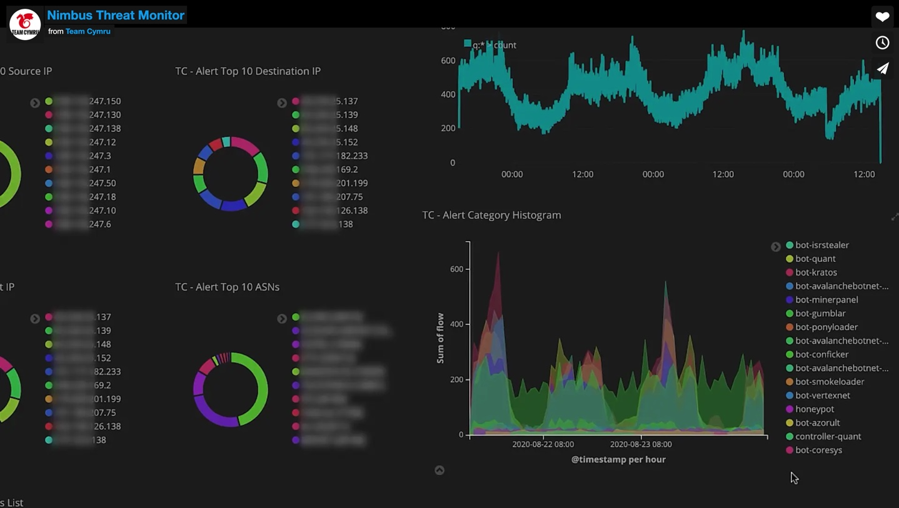
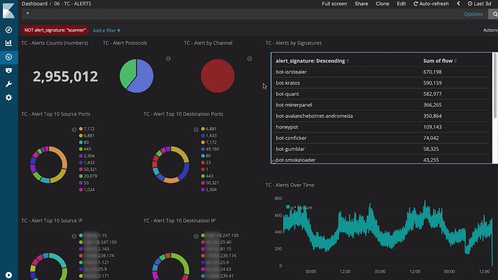

主页
1.1.
前言
1.2.
安全分析概览
1.2.1.
why为何要分析
1.3.
安全分析流程
1.3.1.
数据采集
1.3.1.1.
日志
1.3.1.2.
数据包
1.3.2.
数据处理
1.3.2.1.
大数据
1.3.2.2.
人工智能
1.3.3.
数据应用
1.3.3.1.
过去
1.3.3.1.1.
追踪溯源
1.3.3.2.
现在
1.3.3.2.1.
态势感知
1.3.3.3.
将来
1.3.3.3.1.
威胁预警
1.4.
安全日志分析
1.4.1.
常见系统日志
1.4.2.
日志分析方法
1.4.2.1.
日志分析难点
1.4.3.
日志分析工具
1.4.3.1.
ELK
1.4.3.2.
Splunk
1.5.
领域应用
1.5.1.
物联网
1.5.2.
工业信息
1.5.3.
云安全
1.6.
安全分析工具
1.6.1.
网络分析工具
1.6.1.1.
Wireshark
1.6.1.2.
Capsa Free
1.6.1.3.
Zenoss Core
1.6.1.4.
NetworkMiner
1.6.1.5.
The Dude
1.6.1.6.
Angry IP Scanner
1.6.1.7.
Nimbus Threat Monitor
1.7.
附录
1.7.1.
参考资料
本书使用 GitBook 发布
Nimbus Threat Monitor
Nimbus Threat Monitor
Nimbus Threat Monitor
旧称：
TC Console
主页
Nimbus Threat Monitor - Team Cymru
概述
此工具极大推进了网络可视化。由非盈利性安全研究公司 Team Cymru提供，TC Concole提供网络恶意行为的历史视图，以及网络通信数据，交叉比对该组织收集的全球关于恶意行为的统计数据。该工具免费，但只有愿意与Team Cymru数据库分享网络信息的组织才能获得
图
旧：TC Console

新：Nimbus Threat Monitor


results matching "
"
No results matching "
"